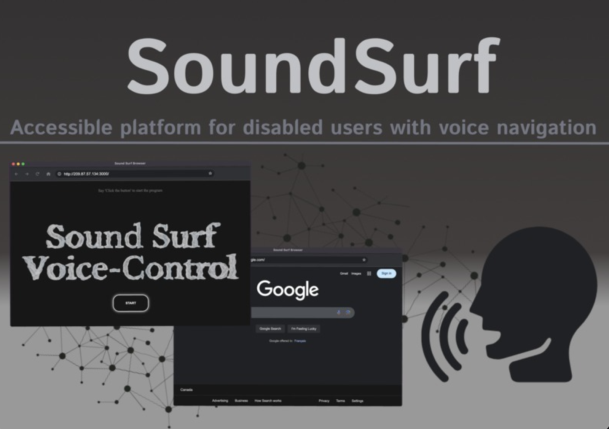

October 6, 2024

SoundSurf is a voice-activated, AI-powered web browser designed to assist people with physical disabilities in accessing the Internet, inspired by a personal experience in which I witnessed a tragic situation with a relative. This project helped our team win Stormhacks 2024 and the Best Social Good Hacks award.
We chose Electron.js for the browser and created a full browser instead of a simpler solution like a Chrome extension. The reason we went with a browser was due to permission issues that users would need to grant, which we felt would make it inaccessible for those who can’t physically interact with a mouse. The UI is simple HTML and CSS, which makes Electron.js more accessible.
We used OpenAI's Whisper to handle speech-to-text because the built-in Chromium speech-to-text requires a GCP API key when running outside of a Chromium browser. We also added an audio-filtering feature to make it usable in noisy environments, which was necessary during hackathon judging sessions. For simple commands, we implemented functions that didn’t require an LLM to process them.
However, for more complex tasks, such as pressing specific buttons or filling out forms, we needed help from an LLM. So, we developed a FastAPI server that takes raw HTML and the user's prompt, uses OpenAI GPT-4 to parse the HTML and find the right accessibility selector, and then returns it to the browser. The browser then queries the selector and interacts with it. This is still a work in progress, as many modern websites are dynamic, using frameworks like React or Vue. The HTML we usually pass in is often too complex and uses too many OpenAI tokens, making it unsustainable.
Looking ahead, we definitely need to fine-tune models specifically for websites and reconsider our browser’s logic. We put too much into our preload.js file, with some items that could have been placed in renderer.js instead.